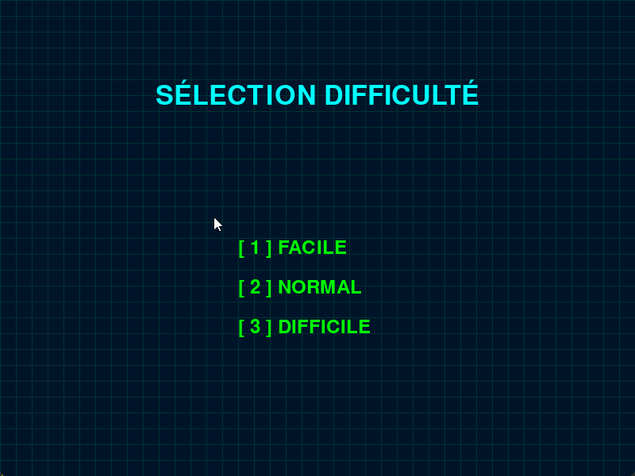

Exploration & Réalisations
Voici quelques-uns des projets que j’ai réalisés au fil de mon apprentissage en programmation et data. Certains sont des exercices pour explorer des technologies, d’autres sont des projets plus aboutis.
⬇️ Projet réaliser en python. Découvrez sur github comment il a était conçu "ici" !
Je vous présente tout d'abord mon projet du Pendu, réalisé en groupe, comme tous mes projets jusqu'à présent. Ce jeu intègre plusieurs fonctionnalités : un système de score, la gestion des utilisateurs via un nom d’utilisateur, ainsi qu’une option permettant d’ajouter de nouveaux mots. Toutes ces données sont stockées dans un fichier JSON, qui peut être supprimé et sera recréé automatiquement au redémarrage si nécessaire.

⬇️ Projet réaliser en python. Découvrez sur github comment il a était conçu "ici" !
Une calculatrice permettant d’effectuer des opérations avec quatre opérateurs différents sur deux nombres. Elle intègre également la gestion de la date et de l’heure, ainsi qu’un système d’historique stocké dans un fichier JSON.

⬇️ Projet réaliser en python. Découvrez sur github comment il a était conçu "ici" !
Ce projet a été mon premier en Python. Il s'agit d'une horloge développée avec la bibliothèque datetime, intégrant plusieurs fonctionnalités : la possibilité de régler l'heure, un système d'alarme avec une alerte visuelle, ainsi que le choix entre les formats AM et PM.